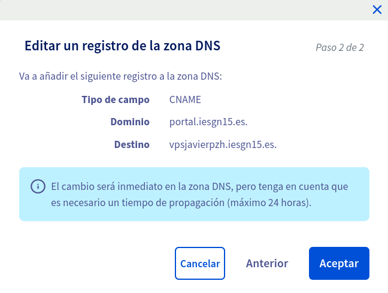
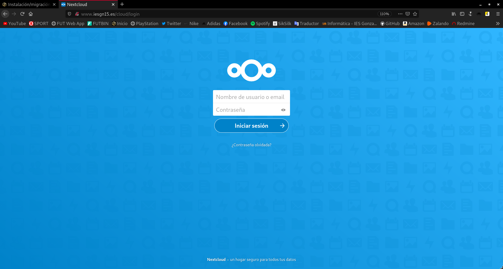

Realizar la migración de la aplicación Drupal que tienes instalada en el entorno de desarrollo a nuestro entorno de producción, para ello ten en cuenta lo siguiente:
Cuando me refiero al entorno de producción, estoy haciendo referencia a un servidor de OVH.
Antes de realizar la migración necesitamos preparar nuestro entorno de producción instalando todos los paquetes necesarios, como pueden ser php, mysql, ... para poder migrar Drupal de manera correcta. En mi caso tengo listo el entorno de producción, ya que en él lleve a cabo la instalación de un servidor LEMP que es lo que al fin y al cabo vamos a utilizar. Si quieres ver como instalar un servidor LEMP puedes verlo aquí.
1. La aplicación se tendrá que migrar a un nuevo virtualhost al que se accederá con el nombre portal.iesgnXX.es.
En nuestro entorno en producción, vamos a crear este nuevo virtualhost. Para ello antes que nada creamos la ruta donde vamos a almacenar esta aplicación, en mi caso dentro de /srv/www/aplicacionesiesgn/.
Ahora debemos crear el fichero de configuración de Nginx que utilizará esta aplicación. Nos desplazamos a /etc/nginx/sites-available/, y podemos copiar el fichero por defecto para tener la estructura, en mi caso ya tengo un virtualhost creado y utilizo el fichero de este:
root@vpsjavierpzh:/etc/nginx/sites-available# cp aplicacionesiesgn.conf drupal.conf root@vpsjavierpzh:/etc/nginx/sites-available# nano drupal.conf
Edito el fichero de configuración de Drupal y queda de tal manera:
server {
listen 80;
listen [::]:80;
root /srv/www/aplicacionesiesgn/drupal;
index index.php index.html index.htm index.nginx-debian.html;
server_name portal.iesgn15.es;
location / {
try_files $uri $uri/ /index.php?$args;
}
location ~ \.php$ {
include snippets/fastcgi-php.conf;
fastcgi_pass unix:/run/php/php7.3-fpm.sock;
}
}
Como podemos apreciar, a esta aplicación se accederá con la URL: portal.iesgn15.es como nos pide el ejercicio. Ya solo nos quedaría habilitar el servicio de este sitio web mediante la creación de un enlace simbólico a la ruta /etc/nginx/sites-enabled/:
root@vpsjavierpzh:/etc/nginx/sites-available# ln -s /etc/nginx/sites-available/drupal.conf /etc/nginx/sites-enabled/ root@vpsjavierpzh:/etc/nginx/sites-available# ls -l /etc/nginx/sites-enabled/ total 0 lrwxrwxrwx 1 root root 49 Nov 9 18:44 aplicacionesiesgn.conf -> /etc/nginx/sites-available/aplicacionesiesgn.conf lrwxrwxrwx 1 root root 34 Nov 9 12:09 default -> /etc/nginx/sites-available/default lrwxrwxrwx 1 root root 38 Nov 18 08:06 drupal.conf -> /etc/nginx/sites-available/drupal.conf
Como hemos realizado cambios en la configuración de Nginx debemos reiniciar el servicio:
systemctl restart nginx.service
2. Vamos a nombrar el servicio de base de datos que tenemos en producción. Como es un servicio interno no la vamos a nombrar en la zona DNS, la vamos a nombrar usando resolución estática. El nombre del servicio de base de datos se debe llamar: bd.iesgnXX.es.
Para nombrar el servicio de la base de datos mediante resolución estática, debemos añadir al fichero /etc/hosts del servidor de OVH la siguiente línea:
127.0.0.1 bd.iesgn15.es
3. Por lo tanto los recursos que deberás crear en la base de datos serán (respeta los nombres):
- Dirección de la base de datos:
bd.iesgnXX.es - Base de datos:
bd_drupal - Usuario:
user_drupal - Password:
pass_drupal
root@vpsjavierpzh:~# mysql -u root -p Enter password: Welcome to the MariaDB monitor. Commands end with ; or \g. Your MariaDB connection id is 65 Server version: 10.3.25-MariaDB-0+deb10u1 Debian 10 Copyright (c) 2000, 2018, Oracle, MariaDB Corporation Ab and others. Type 'help;' or '\h' for help. Type '\c' to clear the current input statement. MariaDB [(none)]> SHOW DATABASES; +--------------------+ | Database | +--------------------+ | information_schema | | mysql | | performance_schema | +--------------------+ 3 rows in set (0.001 sec) MariaDB [(none)]> CREATE DATABASE bd_drupal; Query OK, 1 row affected (0.001 sec) MariaDB [(none)]> CREATE USER 'user_drupal' IDENTIFIED BY 'pass_drupal'; Query OK, 0 rows affected (0.000 sec) MariaDB [(none)]> GRANT ALL PRIVILEGES ON bd_drupal.* TO 'user_drupal'; Query OK, 0 rows affected (0.000 sec) MariaDB [(none)]> SHOW DATABASES; +--------------------+ | Database | +--------------------+ | bd_drupal | | information_schema | | mysql | | performance_schema | +--------------------+ 4 rows in set (0.001 sec) MariaDB [(none)]> exit Bye root@vpsjavierpzh:~#
4. Realiza la migración de la aplicación.
Para realizar la migración, debemos llevarnos todos los archivos de Drupal desde el entorno de desarrollo hasta el entorno de producción. Para ello vamos a copiar los archivos con scp, pero primero vamos a comprimir todos los datos en un solo archivo:
root@buster:/var/www/html# tar -cf ./drupaldat.tar.gz ./drupal/*
Lo pasamos al servidor de OVH:
root@buster:/var/www/html# scp ./drupaldat.tar.gz debian@vpsjavierpzh.iesgn15.es:/home/debian/
Muevo este archivo al directorio donde vamos a almacenar esta aplicación:
root@vpsjavierpzh:/home/debian# mv drupaldat.tar.gz /srv/www/aplicacionesiesgn/
Y descomprimimos el fichero obteniendo como resultado:
root@vpsjavierpzh:/srv/www/aplicacionesiesgn# tar -xvf drupaldat.tar.gz root@vpsjavierpzh:/srv/www/aplicacionesiesgn# cd drupal/ root@vpsjavierpzh:/srv/www/aplicacionesiesgn/drupal# ls autoload.php core INSTALL.txt profiles sites vendor composer.json example.gitignore LICENSE.txt README.txt themes web.config composer.lock index.php modules robots.txt update.php
Nos faltaría simplemente cambiar el propietario de todos estos nuevos archivos a www:data, que es el usuario que posee los permisos de lectura y escritura en Nginx.
chown -R www-data:www-data /srv/
Ya tenemos los datos de Drupal en el entorno de producción por lo tanto nos faltaría restaurar la copia de seguridad en el servidor de OVH. Para ello primero pasamos la copia:
root@buster:~# scp backupdrupal.sql debian@vpsjavierpzh.iesgn15.es:/home/debian/ debian@vpsjavierpzh.iesgn15.es's password: backupdrupal.sql 100% 8165KB 63.9KB/s 02:07 root@buster:~#
Y por último restauramos la copia de seguridad en nuestro servidor de base de datos de OVH:
mysql -u user_drupal -p bd_drupal < backupdrupal.sql
Si entramos y vemos las tablas de esta base de datos:
root@vpsjavierpzh:/home/debian/drupal# mysql -u user_drupal -p bd_drupal Enter password: Reading table information for completion of table and column names You can turn off this feature to get a quicker startup with -A Welcome to the MariaDB monitor. Commands end with ; or \g. Your MariaDB connection id is 74 Server version: 10.3.25-MariaDB-0+deb10u1 Debian 10 Copyright (c) 2000, 2018, Oracle, MariaDB Corporation Ab and others. Type 'help;' or '\h' for help. Type '\c' to clear the current input statement. MariaDB [bd_drupal]> show tables; +----------------------------------+ | Tables_in_bd_drupal | +----------------------------------+ | batch | | block_content | | block_content__body | | block_content_field_data | | block_content_field_revision | | block_content_revision | | block_content_revision__body | | cache_bootstrap | | cache_config | | cache_container | | cache_data | | cache_default | | cache_discovery | | cache_dynamic_page_cache | | cache_entity | | cache_menu | | cache_page | | cache_render | | cachetags | | comment | | comment__comment_body | | comment_entity_statistics | | comment_field_data | | config | | file_managed | | file_usage | | history | | key_value | | key_value_expire | | locale_file | | locales_location | | locales_source | | locales_target | | menu_link_content | | menu_link_content_data | | menu_link_content_field_revision | | menu_link_content_revision | | menu_tree | | node | | node__body | | node__comment | | node__field_image | | node__field_tags | | node_access | | node_field_data | | node_field_revision | | node_revision | | node_revision__body | | node_revision__comment | | node_revision__field_image | | node_revision__field_tags | | path_alias | | path_alias_revision | | queue | | router | | search_dataset | | search_index | | search_total | | semaphore | | sequences | | sessions | | shortcut | | shortcut_field_data | | shortcut_set_users | | taxonomy_index | | taxonomy_term__parent | | taxonomy_term_data | | taxonomy_term_field_data | | taxonomy_term_field_revision | | taxonomy_term_revision | | taxonomy_term_revision__parent | | user__roles | | user__user_picture | | users | | users_data | | users_field_data | | watchdog | +----------------------------------+ 77 rows in set (0.001 sec) MariaDB [bd_drupal]>
Vemos que hemos restaurado la copia de seguridad correctamente.
Ahora nos faltaría crear un registro CNAME en nuestra zona DNS del servidor OVH como este:

Lo creamos:

Si accedemos a la dirección portal.iesgn15.es:

5. Asegúrate que las URL limpias de Drupal siguen funcionando en Nginx.
Para que Drupal utilice las URLs limpias debemos añadir esta línea en su fichero de configuración, es decir, en /etc/nginx/sites-available/drupal.conf:
try_files $uri /index.php?dir=$uri;
6. La aplicación debe estar disponible en la URL: portal.iesgnXX.es (Sin ningún directorio).
Se puede ver como efectivamente la URL de la aplicación portal.iesgn15.es.
Instalación / migración de la aplicación Nextcloud
1. Instala la aplicación web Nextcloud en tu entorno de desarrollo.
Vamos a instalar la aplicación Nextcloud en un servidor web Apache de nuestro entorno de desarrollo para posteriormente realizar la migración a un servidor web Nginx en nuestro entorno de producción.
Nos descargamos Nextcloud desde su página oficial con el siguiente comando:
root@buster:/home/vagrant# wget https://download.nextcloud.com/server/releases/nextcloud-20.0.1.zip --2020-11-18 17:08:17-- https://download.nextcloud.com/server/releases/nextcloud-20.0.1.zip Resolving download.nextcloud.com (download.nextcloud.com)... 95.217.64.181, 2a01:4f9:2a:3119::181 Connecting to download.nextcloud.com (download.nextcloud.com)|95.217.64.181|:443... connected. HTTP request sent, awaiting response... 200 OK Length: 142691943 (136M) [application/zip] Saving to: ‘nextcloud-20.0.1.zip’ nextcloud-20.0.1.zip 100%[=====================================>] 136.08M 10.7MB/s in 16s 2020-11-18 17:08:34 (8.26 MB/s) - ‘nextcloud-20.0.1.zip’ saved [142691943/142691943] root@buster:/home/vagrant#
Vamos a descomprimir el archivo descargado:
root@buster:/home/vagrant# unzip nextcloud-20.0.1.zip
La carpeta descomprimida la trasladamos al directorio donde vamos a almacenar nuestra aplicación web, en mi caso es dentro de /srv/www/, y le vamos a asignar como propietario de los archivos al usuario www-data que es el adecuado.
root@buster:/home/vagrant# mv nextcloud /srv/www/ root@buster:/home/vagrant# ls /srv/www/nextcloud/ 3rdparty config core index.html occ ocs-provider resources themes apps console.php cron.php index.php ocm-provider public.php robots.txt updater AUTHORS COPYING data lib ocs remote.php status.php version.php root@buster:/home/vagrant# chown -R www-data:www-data /srv/www/
Una vez hecho esto, tendríamos que crear un fichero de configuración que nos mostrará la página, para ello creamos uno en /etc/apache2/sites-available/. En mi caso, copio uno ya existente para tener la plantilla, ustedes podéis utilizar el fichero 000-default.conf.
root@buster:/etc/apache2/sites-available# cp anchor.conf nextcloud.conf root@buster:/etc/apache2/sites-available# nano nextcloud.conf
El fichero /etc/apache2/sites-available/nextcloud.conf quedaría así:
<\VirtualHost *:80\>
ServerName www.jpnextcloud.com
ServerAdmin webmaster@localhost
DocumentRoot /srv/www/nextcloud
ErrorLog ${APACHE_LOG_DIR}/error.log
CustomLog ${APACHE_LOG_DIR}/access.log combined
<\/VirtualHost\>
Atención: a esta configuración hay que eliminarle los carácteres \, que he tenido que introducir para escapar los carácteres siguientes, así que en caso de querer copiar la configuración, debemos tener en cuenta esto.
Habilitamos la página:
root@buster:/etc/apache2/sites-available# a2ensite nextcloud.conf Enabling site nextcloud. To activate the new configuration, you need to run: systemctl reload apache2 root@buster:/etc/apache2/sites-available# systemctl reload apache2
Por último, nos quedaría crear un usuario y una base de datos, para que Nextcloud guarde sus datos:
root@buster:/var/www/html/nextcloud# mysql -u root -p Enter password: Welcome to the MariaDB monitor. Commands end with ; or \g. Your MariaDB connection id is 36 Server version: 10.3.25-MariaDB-0+deb10u1 Debian 10 Copyright (c) 2000, 2018, Oracle, MariaDB Corporation Ab and others. Type 'help;' or '\h' for help. Type '\c' to clear the current input statement. MariaDB [(none)]> SHOW DATABASES; +--------------------+ | Database | +--------------------+ | anchor | | drupal | | information_schema | | mysql | | performance_schema | +--------------------+ 5 rows in set (0.014 sec) MariaDB [(none)]> CREATE DATABASE bd_nextcloud; Query OK, 1 row affected (0.001 sec) MariaDB [(none)]> CREATE USER 'user_nextcloud' IDENTIFIED BY 'pass_nextcloud'; Query OK, 0 rows affected (0.005 sec) MariaDB [(none)]> GRANT ALL PRIVILEGES ON bd_nextcloud.* TO 'user_nextcloud'; Query OK, 0 rows affected (0.002 sec) MariaDB [(none)]> SHOW DATABASES; +--------------------+ | Database | +--------------------+ | anchor | | bd_nextcloud | | drupal | | information_schema | | mysql | | performance_schema | +--------------------+ 6 rows in set (0.001 sec) MariaDB [(none)]> exit Bye
Vemos que hemos creado un nuevo usuario con privilegios de la nueva base de datos.
Mi entorno de desarrollo se trata de una máquina virtual Vagrant, por tanto para visualizar este sitio web, necesito añadir en el fichero /etc/hosts de mi máquina la línea que corresponda.
Si nos dirigimos al navegador a la dirección www.jpnextcloud.com nos muestra:
Vemos que Nextcloud necesita una serie de extensiones PHP. Para instalar todas las extensiones necesarias:
apt install php-{mysql,zip,curl,mbstring,xml} -y
Si probamos a entrar ahora a la dirección www.jpnextcloud.com nos muestra:

Vemos como hemos creado una nueva base de datos y un usuario con los correspondientes permisos sobre esta base de datos. Ahora introducimos estos datos en el instalador y comenzará la instalación de Nextcloud.
Una vez finalizado el proceso podemos ver como ya hemos instalado esta aplicación web con Apache.

2. Realiza la migración al servidor en producción, para que la aplicación sea accesible en la URL: www.iesgnXX.es/cloud
Vamos a realizar la migración de esta aplicación instalada previamente a nuestro entorno de desarrollo, pero ahora en vez de trabajar con Apache haremos que trabaje con Nginx.
Lo primero que haremos será realizar una copia de seguridad de la base de datos que tenemos en el servidor de desarrollo, para restaurarla en el servidor de OVH. Para ello:
root@buster:~# mysqldump -u user_nextcloud -p bd_nextcloud > backupnextcloud.sql Enter password: root@buster:~# ls backupdrupal.sql backupnextcloud.sql root@buster:~#
Vamos a comprimir todos los archivos del directorio /srv/www/nextcloud, ya que en él se encuentran todos los datos de la aplicación web:
root@buster:/srv/www# tar -cf ./nextclouddat.tar.gz ./nextcloud/* tar: Removing leading `/' from member names tar: Removing leading `/' from hard link targets root@buster:/srv/www# mv nextclouddat.tar.gz /root/ root@buster:~# ls backupdrupal.sql backupnextcloud.sql nextclouddat.tar.gz tar.gz
Pasamos la copia de seguridad y los datos comprimidos al servidor de OVH:
root@buster:~# scp ./backupnextcloud.sql debian@vpsjavierpzh.iesgn15.es:/home/debian/ debian@vpsjavierpzh.iesgn15.es's password: backupnextcloud.sql 100% 137KB 776.4KB/s 00:00 root@buster:~# scp ./nextclouddat.tar.gz debian@vpsjavierpzh.iesgn15.es:/home/debian/ debian@vpsjavierpzh.iesgn15.es's password: nextclouddat.tar.gz 100% 528MB 8.4MB/s 01:02 root@buster:~#
Una vez en el entorno de producción, vamos a instalar las extensiones de PHP que requiere Nextcloud:
apt install php-{mysql,zip,curl,mbstring,xml} -y
Ahora vamos a descomprimir los archivos de Nextcloud en el directorio /srv/www/aplicacionesiesgn/:
root@vpsjavierpzh:/home/debian# mv nextclouddat.tar.gz /srv/www/aplicacionesiesgn/ root@vpsjavierpzh:/home/debian# cd /srv/www/aplicacionesiesgn/ root@vpsjavierpzh:/srv/www/aplicacionesiesgn# tar -xvf nextclouddat.tar.gz root@vpsjavierpzh:/srv/www/aplicacionesiesgn# ls drupal nextcloud nextclouddat.tar.gz principal root@vpsjavierpzh:/srv/www/aplicacionesiesgn# ls nextcloud/ 3rdparty config core index.html occ ocs-provider resources themes apps console.php cron.php index.php ocm-provider public.php robots.txt updater AUTHORS COPYING data lib ocs remote.php status.php version.php
Debemos cambiar el propietario a www-data:
chown -R www-data:www-data /srv/
Es el momento de crear la base de datos y el correspondiente usuario que utilizará Nextcloud:
root@vpsjavierpzh:/srv/www/aplicacionesiesgn# mysql -u root -p Enter password: Welcome to the MariaDB monitor. Commands end with ; or \g. Your MariaDB connection id is 324 Server version: 10.3.25-MariaDB-0+deb10u1 Debian 10 Copyright (c) 2000, 2018, Oracle, MariaDB Corporation Ab and others. Type 'help;' or '\h' for help. Type '\c' to clear the current input statement. MariaDB [(none)]> SHOW DATABASES; +--------------------+ | Database | +--------------------+ | bd_drupal | | information_schema | | mysql | | performance_schema | +--------------------+ 4 rows in set (0.001 sec) MariaDB [(none)]> CREATE DATABASE bd_nextcloud; Query OK, 1 row affected (0.001 sec) MariaDB [(none)]> CREATE USER 'user_nextcloud' IDENTIFIED BY 'pass_nextcloud'; Query OK, 0 rows affected (0.001 sec) MariaDB [(none)]> GRANT ALL PRIVILEGES ON bd_nextcloud.* TO 'user_nextcloud'; Query OK, 0 rows affected (0.002 sec) MariaDB [(none)]> flush privileges; Query OK, 0 rows affected (0.001 sec) MariaDB [(none)]> SHOW DATABASES; +--------------------+ | Database | +--------------------+ | bd_drupal | | bd_nextcloud | | information_schema | | mysql | | performance_schema | +--------------------+ 5 rows in set (0.001 sec) MariaDB [(none)]> exit Bye
Vemos que hemos creado correctamente el usuario y la base de datos y ahora ya podemos restaurar la copia de seguridad:
root@vpsjavierpzh:/home/debian# mysql -u user_nextcloud -p bd_nextcloud < backupnextcloud.sql Enter password: root@vpsjavierpzh:/home/debian# mysql -u user_nextcloud -p bd_nextcloud Enter password: Reading table information for completion of table and column names You can turn off this feature to get a quicker startup with -A Welcome to the MariaDB monitor. Commands end with ; or \g. Your MariaDB connection id is 326 Server version: 10.3.25-MariaDB-0+deb10u1 Debian 10 Copyright (c) 2000, 2018, Oracle, MariaDB Corporation Ab and others. Type 'help;' or '\h' for help. Type '\c' to clear the current input statement. MariaDB [bd_nextcloud]> show tables; +-----------------------------+ | Tables_in_bd_nextcloud | +-----------------------------+ | oc_accounts | | oc_activity | | oc_activity_mq | | oc_addressbookchanges | | oc_addressbooks | | oc_appconfig | | oc_authtoken | | oc_bruteforce_attempts | | oc_calendar_invitations | | oc_calendar_reminders | | oc_calendar_resources | | oc_calendar_resources_md | | oc_calendar_rooms | | oc_calendar_rooms_md | | oc_calendarchanges | | oc_calendarobjects | | oc_calendarobjects_props | | oc_calendars | | oc_calendarsubscriptions | | oc_cards | | oc_cards_properties | | oc_collres_accesscache | | oc_collres_collections | | oc_collres_resources | | oc_comments | | oc_comments_read_markers | | oc_credentials | | oc_dav_cal_proxy | | oc_dav_shares | | oc_direct_edit | | oc_directlink | | oc_federated_reshares | | oc_file_locks | | oc_filecache | | oc_filecache_extended | | oc_files_trash | | oc_flow_checks | | oc_flow_operations | | oc_flow_operations_scope | | oc_group_admin | | oc_group_user | | oc_groups | | oc_jobs | | oc_login_flow_v2 | | oc_mail_accounts | | oc_mail_aliases | | oc_mail_attachments | | oc_mail_classifiers | | oc_mail_coll_addresses | | oc_mail_mailboxes | | oc_mail_messages | | oc_mail_recipients | | oc_migrations | | oc_mimetypes | | oc_mounts | | oc_notifications | | oc_notifications_pushtokens | | oc_oauth2_access_tokens | | oc_oauth2_clients | | oc_preferences | | oc_privacy_admins | | oc_properties | | oc_recent_contact | | oc_richdocuments_assets | | oc_richdocuments_direct | | oc_richdocuments_wopi | | oc_schedulingobjects | | oc_share | | oc_share_external | | oc_storages | | oc_systemtag | | oc_systemtag_group | | oc_systemtag_object_mapping | | oc_talk_bridges | | oc_talk_commands | | oc_talk_guests | | oc_talk_participants | | oc_talk_rooms | | oc_talk_signaling | | oc_text_documents | | oc_text_sessions | | oc_text_steps | | oc_trusted_servers | | oc_twofactor_backupcodes | | oc_twofactor_providers | | oc_user_status | | oc_user_transfer_owner | | oc_users | | oc_vcategory | | oc_vcategory_to_object | | oc_webauthn | | oc_whats_new | +-----------------------------+ 92 rows in set (0.001 sec) MariaDB [bd_nextcloud]> exit Bye
Vemos que la hemos restaurado satisfactoriamente, por tanto, ya tendríamos todos los datos disponibles en el entorno de producción, por lo que nos faltaría crear el sitio web.
Para crear el sitio web, creamos su fichero de configuración, lo enlazamos simbólicamente a la ruta /etc/nginx/sites-enabled/ para que esté disponible para Nginx:
root@vpsjavierpzh:/etc/nginx/sites-available# cp drupal.conf nextcloud.conf root@vpsjavierpzh:/etc/nginx/sites-available# nano nextcloud.conf root@vpsjavierpzh:/etc/nginx/sites-available# ln -s /etc/nginx/sites-available/nextcloud.conf /etc/nginx/sites-enabled/ root@vpsjavierpzh:/etc/nginx/sites-available# ls -l /etc/nginx/sites-enabled/ total 0 lrwxrwxrwx 1 root root 49 Nov 9 18:44 aplicacionesiesgn.conf -> /etc/nginx/sites-available/aplicacionesiesgn.conf lrwxrwxrwx 1 root root 34 Nov 18 16:31 default -> /etc/nginx/sites-available/default lrwxrwxrwx 1 root root 38 Nov 18 08:06 drupal.conf -> /etc/nginx/sites-available/drupal.conf lrwxrwxrwx 1 root root 41 Nov 18 19:13 nextcloud.conf -> /etc/nginx/sites-available/nextcloud.conf
Reiniciamos el servicio:
systemctl restart nginx
Accedemos a la dirección http://www.iesgn15.es/cloud/ y obtenemos este resultado:

3. Instala en un ordenador el cliente de Nextcloud y realiza la configuración adecuada para acceder a "tu nube".
Documenta de la forma más precisa posible cada uno de los pasos que has dado, y entrega pruebas de funcionamiento para comprobar el proceso que has realizado.